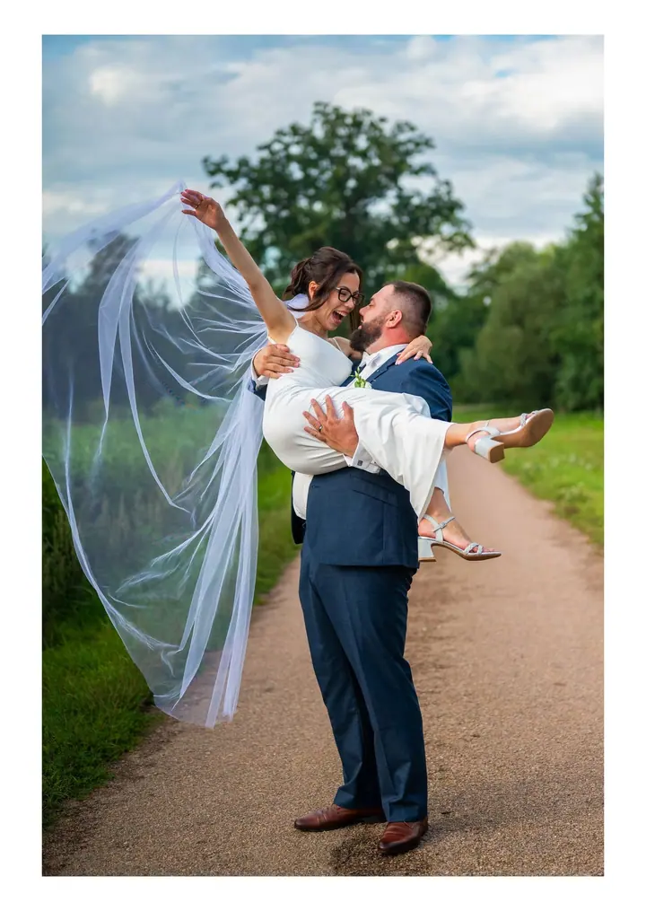
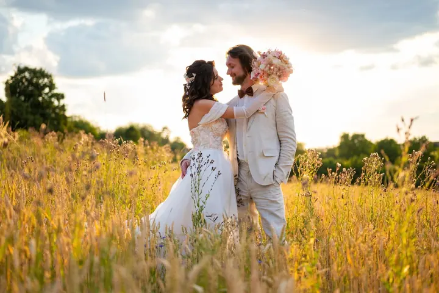
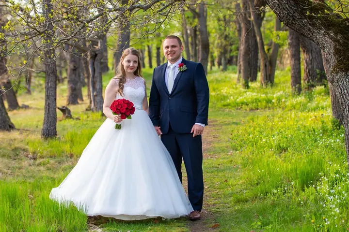

jedna
Celodenní svatební focení
Na svatbě jsem s vámi 10 až 11 hodin, stihnu i ochutnat sladký raut a vytvořím 700 až 800 upravených fotografií. Cena balíčku je 13 900 Kč.

Svatební a eventový fotograf · Středočeský kraj, Ústecký kraj, Plzeňský kraj

Jmenuji se Lukáš Vintr a jsem především svatební fotograf. Nejvíc mě na svatbách naplňuje poznávání nových lidí a jejich příběhů. A když se při focení i společně zasmějeme, je všechno tak, jak má být.
Více o mně
Co fotím
jedna
Na svatbě jsem s vámi 10 až 11 hodin, stihnu i ochutnat sladký raut a vytvořím 700 až 800 upravených fotografií. Cena balíčku je 13 900 Kč.
dvě
Sedm až osm hodin mé přítomnosti, rautu se věnuji o něco méně a vytvořím 400 až 500 upravených fotografií. Cena balíčku je 11 900 Kč.
Kromě svateb fotím i další významné události. Baví mě poznávat nové lidi, jejich příběhy a výzvy, které takový den přináší.
Máte rádi černobílé fotografie? Za 1 000 Kč vám všechny snímky ze svatby zpracuji navíc i černobíle, takže budete mít dvojnásobný počet fotek.

Každá svatba je pro mě nový příběh.


Za objektivem
Můj první kontakt s fotografováním přišel už ve dvanácti letech. Tehdy někoho napadlo dát mi k Vánocům malou modrou krabičku s nápisem Olympus a po pár dnech bylo jasné, že tenhle dárek byl trefa do černého.
Dnes jsem především svatební a eventový fotograf. Jako asi každého fotografa mě baví hraní si se světlem, kompozice a další technické věci, bez kterých by to nešlo. Nejvíc mě ale naplňuje poznávání nových lidí, jejich příběhů a překonávání výzev, které celý svatební den přináší.
Mám za sebou přes 100 svateb na nejrůznějších místech a fotím téměř po celé republice. Zkušenosti ze svateb předávám i v krátkém podcastu, tak se klidně nechte inspirovat.
Lukáš
Napište mi termín a místo vaší svatby. Odpovím vám co nejdříve a domluvíme se na dalším postupu.
Sejdeme se osobně nebo online, poznáme se a probereme, jak si svatební den představujete. Vše stvrdíme smlouvou.
Podle zvoleného balíčku jsem s vámi 7 až 11 hodin. Fotím obřad, hosty, oslavu i vaše společné portréty.
Všechny fotografie upravím a dodám v digitální podobě, nejpozději do 3 týdnů.
Portfolio
Otázky
U celodenního focení vytvořím 700 až 800 fotografií, u zkráceného 400 až 500. Všechny jsou upravené.
Upravené fotografie vám dodám v digitální podobě nejpozději do 3 týdnů, u obou balíčků.
Ano. Za 1 000 Kč vám všechny fotografie zpracuji navíc i v černobílém provedení, takže budete mít dvojnásobný počet fotek.
Fotím téměř po celé ČR, nejčastěji ve Středočeském, Ústeckém, Plzeňském, Karlovarském a Libereckém kraji a v Praze.